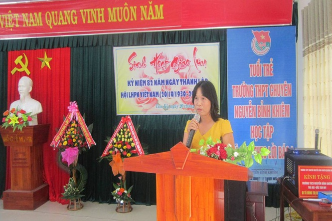

Công đoàn trường tổ chức sinh hoạt giao lưu kỉ niệm 82 năm ngày thành lập Hội LHPN Việt Nam 20/10/1930 – 20/10/2012

Lần cập nhật cuối lúc Thứ ba, 17 Tháng 9 2013 07:53 Viết bởi Administrator Thứ tư, 31 Tháng 10 2012 18:15
Nhân kỉ niệm 82 năm ngày thành lập Hội LHPN Việt Nam (20/10/1930 – 20/10/2012), được sự thống nhất của Chi ủy chi bộ và BGH, chiều ngày 20/10, Công đoàn trường đã tổ chức buổi sinh hoạt giao lưu giữa toàn thể công đoàn viên của trường cùng khách mời là Dâu – Rể và đơn vị trường kết nghĩa miền núi – THCS Nguyễn Bỉnh Khiêm – Trà Bui. Tham dự buổi giao lưu còn có các đại biểu đại diện Hội CMHS và Hội khuyến học của trường.
Mở đầu buổi sinh hoạt, đại diện BCH Công đoàn - cô Phạm Thị Thanh Thu đã ôn lại truyền thống tốt đẹp của PNVN, những đóng góp của phong trào phụ nữ đối với sự nghiệp dựng nước và giữ nước; nhấn mạnh những đóng góp của phong trào nữ trong nhà trường và phát động phong trào thi đua “ Hai giỏi” trong nữ NG-LĐ. Thầy Nguyễn Đình Tiến đại diện lãnh đạo nhà trường phát biểu chúc mừng chị em phụ nữ. HĐSP cũng đã dành những bó hoa tươi thắm tặng cho các đại diện nữ NG-LĐ của trường, đạị diện Dâu của trường và đại diện nữ trường bạn.
Trong dịp này, Câu lạc bộ Dâu – Rể của trường đã chính thức ra mắt và để khởi động cho những hoạt động của CLB, một Ban chủ nhiệm đã được tập thể Dâu – Rể nhất trí đề cử gồm: anh Đinh Văn Phúc (chồng cô Hiền) – Chủ nhiệm CLB, anh Lưu Thanh Hải (chồng cô Trang) và cô Trần Thị Ngọc Uyển (vợ thầy Châu) – UV, phó chủ nhiệm CLB.
Cũng trong nội dung của buổi giao lưu, Công đoàn đã tổng kết công tác giao lưu kết nghĩa với trường miền núi – THCS Nguyễn Bỉnh Khiêm, Trà Bui. Qua 9 lần giao lưu (từ năm 2003), hai trường đã kết nối tình cảm sẻ chia giữa miền xuôi và miền ngược. Không chỉ tổ chức các hoạt động giao lưu văn hóa, văn nghệ, thầy và trò Trường THPT chuyên Nguyễn Bỉnh Khiêm đã chia sẻ phần nào những khó khăn của đơn vị bạn thông qua những hoạt động vận động quyên góp sách vở, quần áo ấm; hỗ trợ học bổng cho học sinh nghèo trường bạn. Trong lần giao lưu này, công đoàn trường cũng đã trao tặng số tiền 5.000.000 đồng (năm triệu đồng) từ nguồn đóng góp của giáo viên và học sinh, hỗ trợ cho trường bạn trang bị 1 chiếc tủ đông giúp trường bạn khắc phục phần nào những khó khăn, bất tiện trong việc dự trữ thực phẩm cho giáo viên và học sinh khu nội trú của trường do điều kiện đường sá đi lại xa xôi, trắc trở của trường miền núi.
Phần sinh hoạt giao lưu diễn ra trong không khí sẻ chia, thân tình. Các thầy cô giáo, các Dâu – Rể của trường và đồng nghiệp đến từ trường bạn đã nhiệt tình tham gia một số trò chơi giao lưu do BTC chuẩn bị như: “Trợ giúp đồng nghiệp”, “Đi tìm người thương”, “Tay ải, tay ai”... Chương trình liên hoan văn nghệ cũng rất phong phú đa dạng với các tiết mục văn nghệ của tập thể tổ công đoàn, song ca Dâu –Rể, đơn ca ... khiến cho không khí buổi giao lưu thêm vui vẻ, sôi nổi, hào hứng.
Mong rằng những hoạt động giao lưu như trên sẽ giúp thắt chặt hơn tình cảm đồng chí, đồng nghiệp; góp phần xây dựng mối đoàn kết gắn bó trong tập thể HĐSP, hướng đến mục tiêu chung xây dựng nhà trường thân thiện và phát triển bền vững.
Tin bài: Hồ Thị Thúy Hằng – CTCĐ
* MỘT SỐ HÌNH ẢNH BUỔI SINH HOẠT GIAO LƯU

Cô Phạm Thị Thanh Thu phát biểu về ý nghĩa ngày thành lập Hội LHPN VN 20-10 tổng kết phong trào nữ và phát động thi đua
Tặng hoa chúc mừng các đại diện phụ nữ.
Đại diện Công đoàn và BGH tặng quà cho trường kết nghĩa NBK Trà Bui
Ra mắt Câu lạc bộ Dâu – Rể
Trò chơi: “Trợ giúp đồng nghiệp”
Tiết mục tốp ca liên tổ: Sinh – Tin
Các cặp Dâu – Rể tham gia trò chơi giao lưu: “Đi tìm người thương” và “Tay ải, tay ai?”
Tiết mục song ca dự thi của các “ Cặp đôi hoàn hảo”!
Khách đã vãn từ lâu nhưng chủ vẫn say sưa hát!
- 29/11/2013 09:41 - Hoạt động của câu lạc bộ Tiếng Anh
- 04/09/2013 07:00 - Tuyên dương khen thưởng học sinh đỗ thủ khoa và đạ…
- 02/04/2013 09:37 - GIẢI THỂ THAO HỌC SINH TRƯỜNG THPT CHUYÊN NGUYỄN …
- 26/12/2012 09:24 - Triển khai công tác giáo dục An toàn giao thông, t…
- 20/09/2012 15:30 - Khẩu hiệu có đem lại hiệu quả giáo dục?
- 24/08/2011 00:00 - Học sinh Trần Lê Phương, trường THPT chuyên Nguyễn…